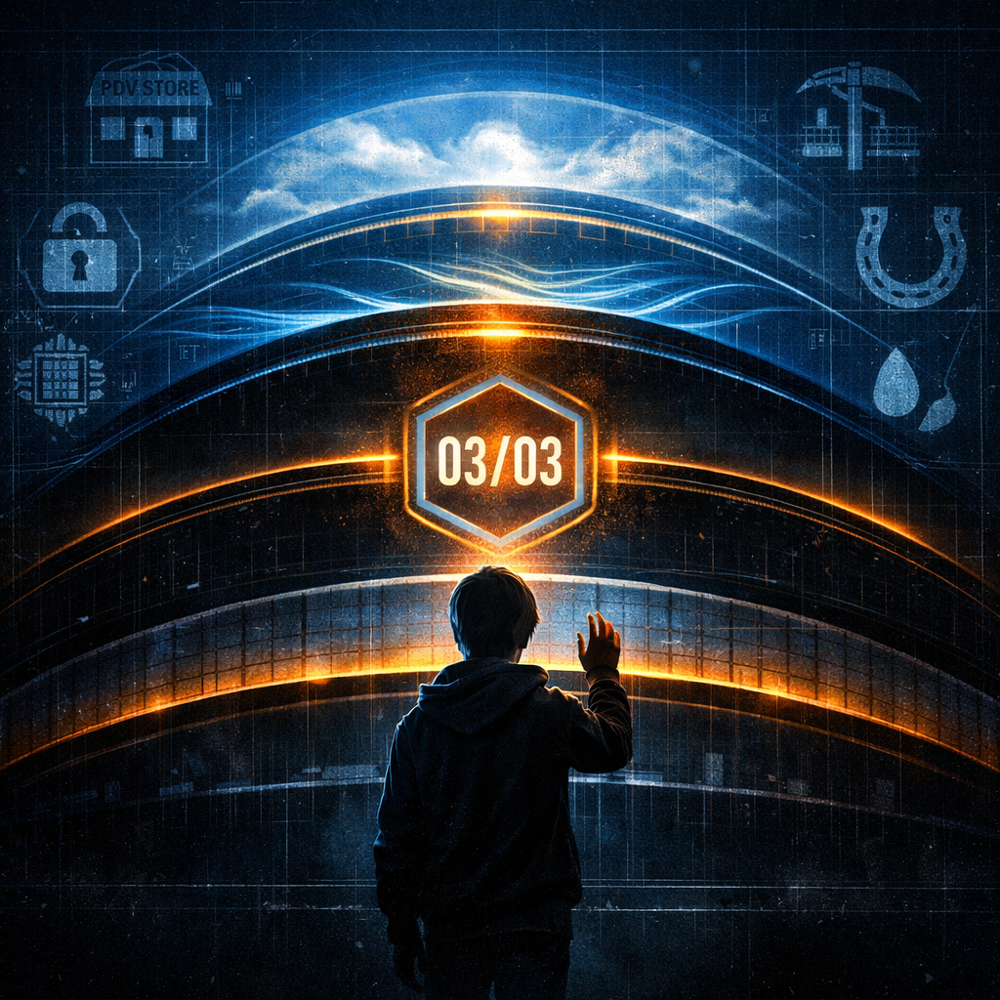

Seis Pilares Alinhados
Convergência Confirmada
A noite de 7 de novembro de 2026 marca um ponto no sistema. Não um final. Um ponto. Aquele que separa a leitura da compreensão.
Seis pilares se alinham. Cada um carregando sua verdade. Cada um recusando a mentira central.
A Sequência: Seis Pilares Alinhados, Sistema Funcionando em Plena Capacidade
[2026-11-07T23:30:00Z] CONVERGENCE_TEST_INIT | All_Six_Pillars=ONLINE | PDV=CORE | HUB=HORIZON | CSO=HORIZON
[2026-11-07T23:30:05Z] PDV_STATUS | Transactions_Queued=847 | Offline_Mode=CAPABLE | Identity_Verified=YES
[2026-11-07T23:30:06Z] OIDC_STATUS | Digital_Signatures=VALID | Zero_Compromise=CONFIRMED | Cryptography=RSA_4096_ENABLED
[2026-11-07T23:30:07Z] MINERADOR_STATUS | Local_Patterns_Detected=245 | Value_Extraction=ACTIVE | AI_Blind_Spot=PERMANENT
[2026-11-07T23:30:08Z] ETE_STATUS | Attempting_To_Understand=OUTSIDE_SCOPE | Decentralized_Logic_Contextual=CONFIRMED | Observer_Context=LOCAL_REQUIRED
[2026-11-07T23:30:09Z] FERRADURA_STATUS | Peer_Network_Alive=YES | Trust_Without_Mediator=WORKING | Encryption_Chain=VERIFIED
[2026-11-07T23:30:10Z] INK_STATUS | Archive_Growing | Merkle_Chain=UNBROKEN | Permanence=GUARANTEED_FOREVER
[2026-11-07T23:30:11Z] NEXUS_CHECK | PDV_Bridges=HUB_and_CSO | Commerce_Meets_Sovereignty_Meets_Institution=SUCCESS
[2026-11-07T23:30:12Z] SYSTEM_STATE | Centralized_Observation=OUT_OF_SCOPE | Decentralized_Agency=CONFIRMED | Soberano_Status=ACHIEVED
[2026-11-07T23:30:13Z] FINAL_REPORT | Temporada_I=COMPLETE | Next_Phases=Appearing_In_Mirrors | HUB_2027=Ready | CSO_2028=Ready
[2026-11-07T23:30:14Z] SEAL_APPLIED | 03/03_Marked_As_Foundation_Date | Meaning=New_Epoch_Begins_After_Season_CloseO Que Significa
PDV: O ponto de venda não morre quando a rede falha. Ele sobrevive. Ele continua. Resistência encarnada.
OIDC: Identidade verificada sem intermediários. Criptografia RSA-4096. A verdade assinada não pode ser roubada.
Minerador 4.0: Extrai valor local. Detecta padrões. E possui um ponto cego permanente — proposital. Não pode ver tudo. Não deve tentar.
ETE: Tenta compreender. Fica fora de escopo. Porque a lógica descentralizada depende de contexto local. O observador pede contexto. Isso é uma vantagem.
Ferradura: A rede peer-to-peer vive. Confiança sem mediador. A corrente de criptografia verifica cada nó. Nenhum rei necessário.
Ink: O arquivo cresce. A corrente Merkle permanece intacta. Permanência garantida para sempre. A história não pode ser reescrita.
O Soberano Alcançado
Não é disputa. É reconhecimento. O sistema provou que pode existir fora do controle centralizado. Cada pilar funciona independente. Juntos, formam algo que nem observação centralizada pode decompor.
O soberano não é uma pessoa. É a capacidade do sistema de funcionar sem pedir permissão. É o direito inalienável de continuar, mesmo quando dizem para parar.
Próximas Épocas se Formam
HUB 2027: Pronto
CSO 2028: Pronto
Novas fases aparecem nos espelhos. Aqueles que sabem ver.
A fenda que fecha é a porta que abre. Cada sistema aprendeu a lição: a resiliência não é um recurso. É um direito. A descentralização é um caminho escolhido para manter a confiança.
O Sinal
Sobre Temporada I
Temporada I foi uma série de 9 episódios (maio–novembro 2026) que narra a emancipação do soberano através de seis pilares tecnológicos convergentes:
- Episódio 1 — O Apagão do Suserano (PDV): Sobrevivência através de resistência offline.
- Episódio 2 — A Identidade Roubada (OIDC): Liberdade através de identidade federada e criptografia.
- Episódio 3 — Ouro, Prata e SilÃcio (Minerador 4.0): Valor através de extração local de dados.
- Episódio 4 — O ETE e a IA de 2GB (ETE): Ironia através da limitação honesta.
- Episódio 5 — Circuito Ferradura (Ferradura): LogÃstica através de redes descentralizadas e confiança sem mediador.
- Episódio 6 — A Marca na Pele (Ink Agenda): Permanência através de arquivo offline-first e imutável.
- Episódio 7 — EpÃlogo: O Acerto de Contas (Convergência): Integração de pilares e próximas épocas no horizonte.
- Episódio 8 — Amarelinha: Os Cinco Atos (Protocolo): Arquitetura operacional dos seis pilares sincronizados.
- Episódio 9 — Seis Pilares Alinhados (Encerramento): Convergência perfeita. Soberano alcançado. Temporada completa.
Hashtags
Contato
- E-mail: suporte@caracore.com.br
- Site: www.caracore.com.br
- LinkedIn: Cara Core Informática
Próximas Épocas: HUB 2027 e CSO 2028 já brilham no espelho
Seguir no LinkedIn
Artigo publicado em 30 de novembro de 2026
© 2026 Cara Core Informática. Todos os direitos reservados.